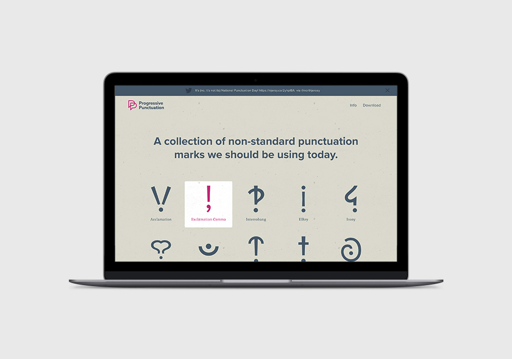
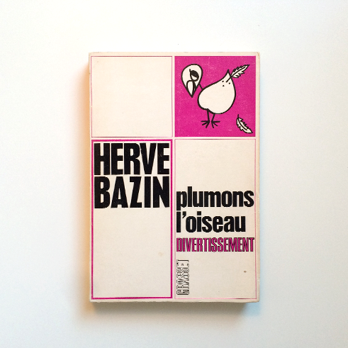
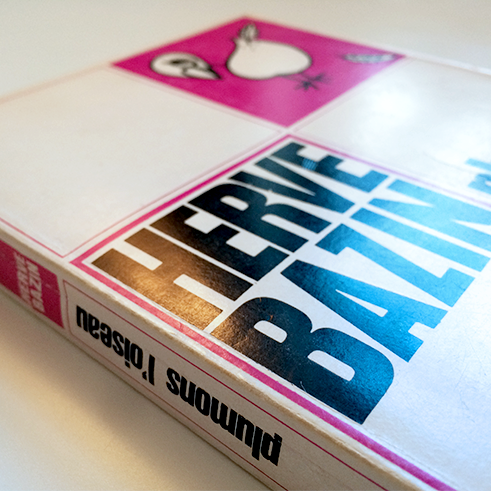
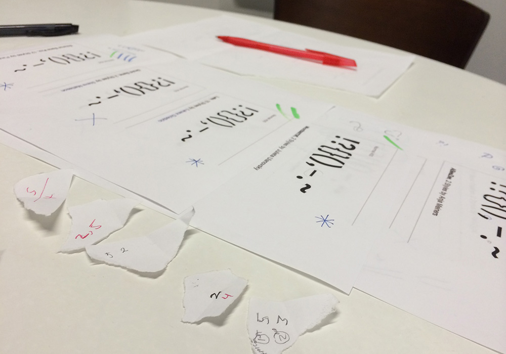
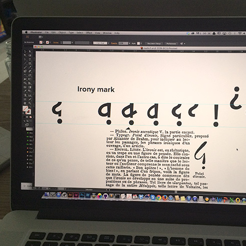
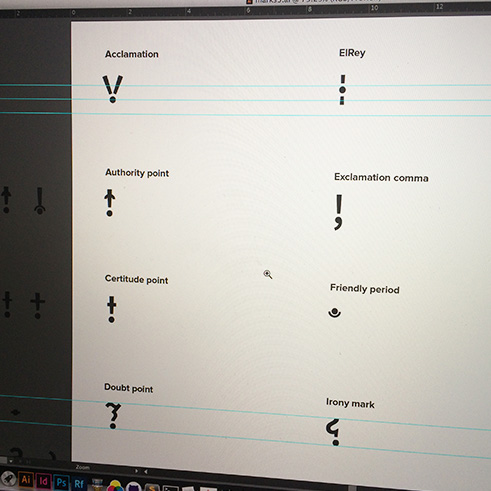
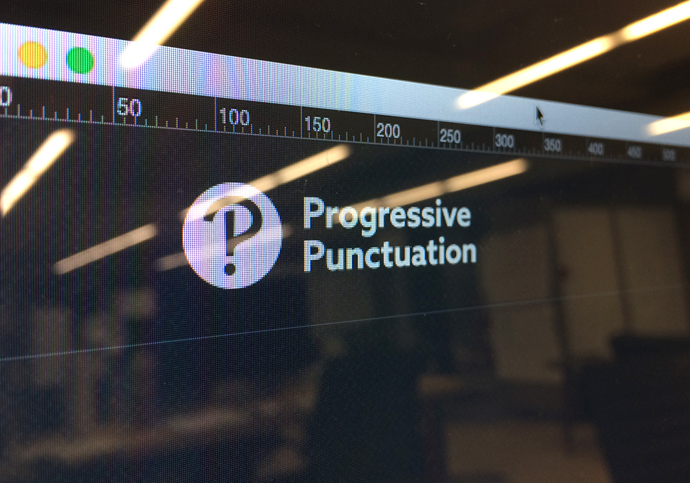
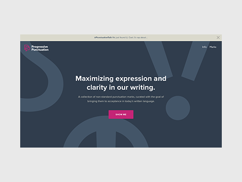
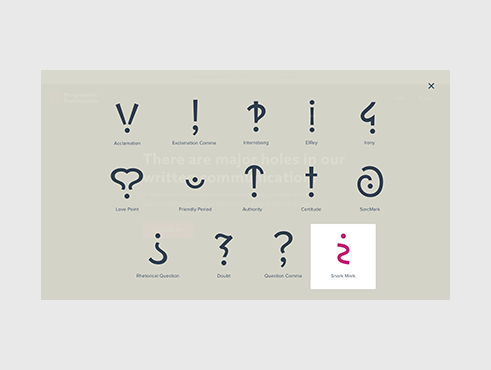
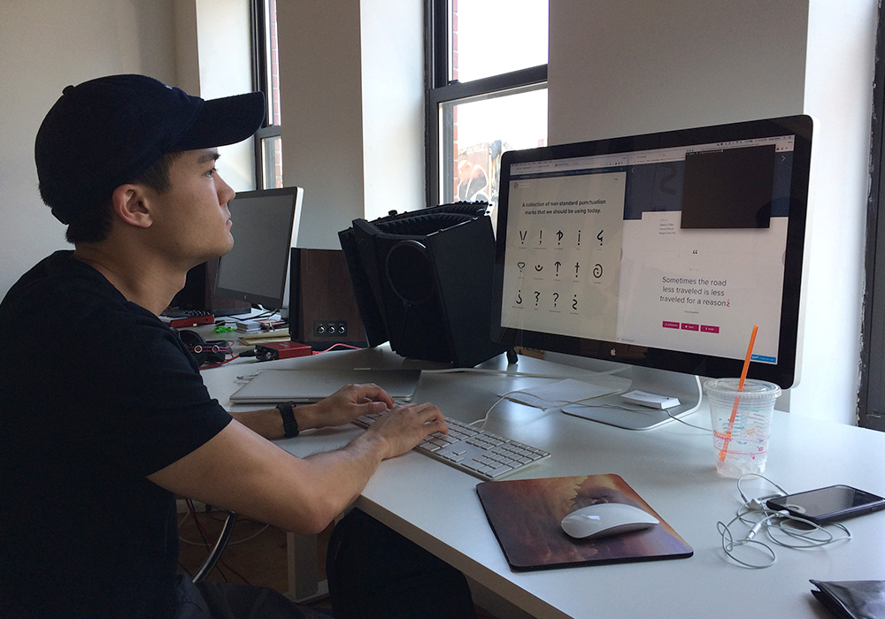

Branding Personal UI UX
Progressive Punctuation: bringing lost marks to light
Progressive Punctuation is a responsive site showcasing non-standard punctuation marks that have the potential to improve our written communication. Proving demand for these marks is the best way to demonstrate their value to the Unicode Consortium, who ultimately decides what characters we can type. If you would like to be able to use any of these marks in the future, please share the site on social media, thanks for your support.

Sometime in 2015, I came across a group of non-standard punctuation marks that never found their way into our written language. Several were conceived and designed by a French writer named Hervé Bazin, who included them in his 1966 book, Plumons l'Oiseau. Intrigued, I dug deeper into the topic and discovered that modern writers had also invented helpful marks like the Friendly Period and ElRey.


I spent the next couple weeks bringing up the lost punctuation marks in casual conversation, and it seemed very few people knew about them — though many thought they would be very useful today. Friends and colleagues said it can be very frustrating to express subtle tones like sarcasm, certitude, irony, etc, which are easily misinterpreted. We often resort to overuse of exclamation marks, ending sentences with "haha" or "jk," or adding emojis or animated GIFs — all of which are band-aid fixes for the real issue: our keyboards simply don't have the necessary punctuation to express important tones. And in a technology-first era, where email, text, and tweet are the primary means of communication, I simply couldn't let it go.
Unsatisfied with the notion of these attractive and useful marks continuing to fall by the wayside, I recruited a few friends and set out to create a site that would display them, provide a brief history of their origins, and demonstrate their value by showing how they would be used in a sentence.
The first step was to design our own version of the marks, as a cohesive set. We began our search for a typeface that would serve as the foundation for the marks. Though it was tempting, we steered clear of expressive display faces, since the purpose of the site was to present the marks in their truest, simplest form. This would also allow the marks to be used as an icon font later on, where they would need to play well with other fonts. We eventually chose Proxima Nova for its cleanliness.



The first iteration of the project's identity sort of created itself. We loved the weathered pinks and tans found on the cover of Bazin's book — they felt light-hearted and approachable, which seemed right for the site's tone. We added a complementary blue and those three colors rounded out the palette we would use for the remainder of the project.
The first logo incorporated an interrobang, since it looks a lot like a "P." We loved the simplicity and straight-forwardness of this concept, but unfortunately had to redesign it when a large educational instituion decided to use the interrobang in their new identity about a year later. The redesigned logo is two overlapping P's that allude to conversation bubbles, representing communication and humanizing the mark a bit.
We incorporate a speckled paper texture treatment wherever possible — this pays homage to Bazin's vintage book, a major source of inspiration for the project. Plus, it adds visual interest and depth, and looks cool.

When it came to the design and experience of the site itself, the live version is actually very different from the original, which had the marks appear in a modal window rather than directly on the homepage. We received feedback that the marks felt too buried in the modal, and that they should be more prominently featured, as they are so interesting to look at. We also had each mark's description lower on the page but ended up bringing it up to sit near the mark, for quicker information consumption.
Finding appropriate sentences for the marks to live took almost as much time as designing the marks themselves. We knew it was important to give the marks as much context as possible, and determined the best way to demonstrate their meaning was to integrate them into movie, television, or song quotes that visitors may already know. This would reinforce how they are intended to make the sentence read.
We used Fontastic to create the icon font, which allowed us to use them in the example quotes underneath each mark's description. An interesting and rather tedious exercise that came about during the process was aligning the icons within their sentences to look like they belong. For each mark, we had to apply a unique set of CSS rules that tweaked the icon's scale and position.



"Why not just continue to use emojis or GIFs?" I've been asked. While emojis and GIFs do help bridge the gap between our spoken language and written language by clarifying nuanced tones in casual conversations, they aren't acceptable in all contexts. Would an author use an emoji to express a character's sarcasm in a novel? Would a lawyer use one to convey doubt in an email to a client? There is definitely still a need for clarification in professional environments where emojis and GIFs are taboo.
Initial reception for the project was incredible. Fueled by interest surrounding National Punctuation Day, which we chose as our launch date, the site was recognized by: Awwwards, Product Hunt, TypeWolf, Design Observer, Designer News, Hacker News (YCombinator), Typography Guru, and Creative Bloq. We've received emails from people who are just as excited about the project as we are. Designers, educators, writers, and fellow type geeks from Russia, China, Venezuela, New Zealand, Australia, Romania, and the US have asked us how and when they can begin using the marks, where they can purchase swag, and how they can get involved.